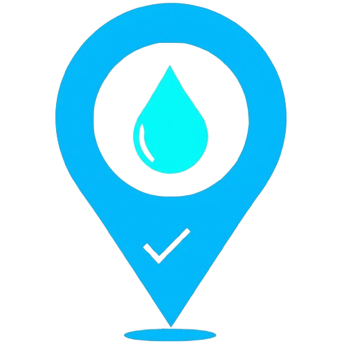
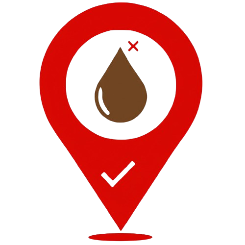

Community Forum & Local Initiatives Map (SDG 11, 12, 17, 6)
Connect, share, and discover local sustainable resources and water quality reports.
Local Initiatives & Water Quality Map
Find repair shops, farmers' markets, sustainable businesses, and view water quality reports near you.
Map data is illustrative. A real implementation would require a database and reporting mechanism.
Legend:
Sustainable Business |
Repair Workshop |
Farmers' Market |
 Good Water Quality Report |
 Poor Water Quality Report
Community Forum
Share your tips, ask questions, and discuss sustainable living.
Start a New Discussion (Demo)
Note: Posts are not saved in this demo.
Recent Discussions:
Reducing Plastic Waste in Our Town
User "EcoWarriorJane": Hey everyone! I'm looking for practical tips on reducing plastic use, especially when grocery shopping locally. What strategies work for you?
Posted 2 hours agoBest Local Farmers' Market for Organic Produce?
User "GreenThumbTom": Does anyone have recommendations for farmers' markets with good organic options near the city center?
Posted 1 day ago